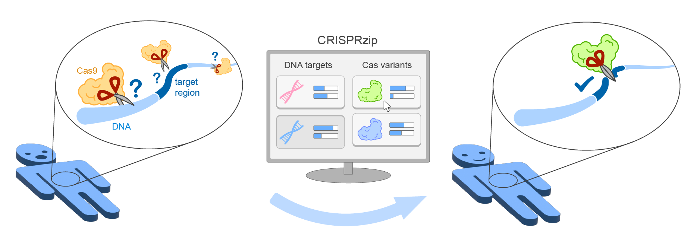

About CRISPRzip

CRISPRzip is a physics-based model to study the target recognition dynamics of CRISPR-associated nucleases like Cas9 Eslami-Mossalam et al., 2022. Their interactions with target DNA is represented as an energy landscape, with which you can simulate binding and cleavage kinetics. The parameters have been obtained by machine learning on high-throughput data (see Eslami-Mossalam et al., 2022). CRISPRzip makes quantitative predictions of on-target efficiency and off-target risks of different guide RNAs.
With CRISPRzip, we hope to contribute to assessing the risks that come with particular choices in CRISPR application, and as such contribute to the development of safe gene editing technology.
References
Eslami-Mossallam B et al. (2022) A kinetic model predicts SpCas9 activity, improves off-target classification, and reveals the physical basis of targeting fidelity. Nature Communications. 10.1038/s41467-022-28994-2